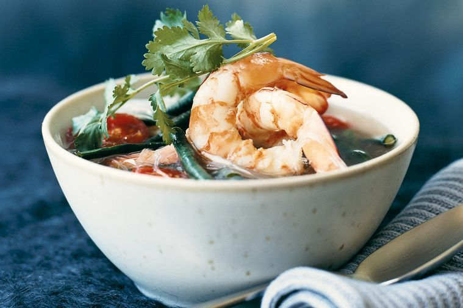

Tom Yum Kung

Description
This hot and sour prawn soup may be super speedy, but it's packed with fresh herbs and delicious Thai flavours.
Ingredients:
- 2 kaffir lime leaves
- 2 cups (500ml) chicken stock
- Eggs
- 2 small red chillies, seeds removed, finely chopped
- 3cm-piece ginger, peeled, thinly sliced
- 2 tbs fish sauce
- 1 tbs Tamarind paste
- 200g glass (bean thread) noodles or rice vermicelli
- 150g green beans or snake beans, trimmed, cut into 3cm lengths
- 12 cherry tomatoes, halved
- 16 large green king prawns, peeled (tails intact), deveined
- Coriander sprigs and lime cheeks (optional), to serve
Steps:
- Place the stock, kaffir lime leaves, chilli, ginger, fish sauce, tamarind paste and 2 cups (500ml) water in a large heavy-based saucepan, and bring to the
boil over high heat. Reduce heat to medium-low and simmer for 5 minutes.
- Meanwhile, place the glass noodles or vermicelli in a large heatproof bowl and pour over enough boiling water to cover. Set aside for 3 minutes to soften,
then rinse and drain well and divide among serving bowls.
- Add the green or snake beans to the soup and simmer for a further 2 minutes. Add the tomatoes and prawns, then remove from the heat. Stand for 1 minute until
prawns are just cooked, then ladle soup over the noodles and garnish with coriander sprigs. Serve immediately, with lime cheeks if desired.
- Bon Appétit!
Return to Main Page